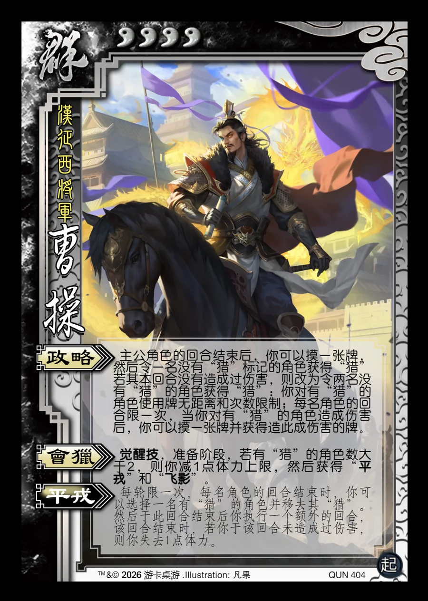

点击卡面查看大图
群
起曹操
♥4汉征西将军
政略
主公角色的回合结束后，你可以摸一张牌，然后令一名没有“猎”标记的角色获得“猎”若其本回合没有造成过伤害，则改为令两名没有“猎”的角色获得“猎”：你对有“猎”的角色使用牌无距离和次数限制；每名角色的回合限一次，当你对有“猎”的角色造成伤害后，你可以摸一张牌并获得造此成伤害的牌。
会猎觉醒技
觉醒技，准备阶段，若有“猎”的角色数大于2，则你减1点体力上限，然后获得“平戎”和“飞影”。
平戎衍生
每轮限一次，每名角色的回合结束时，你可以选择一名有“猎”的角色并移去其“猎”。然后于此回合结束后你执行一个额外的回合，该回合结束时，若你于该回合未造成过伤害，则你失去1点体力。